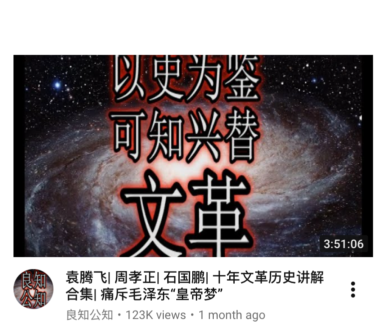
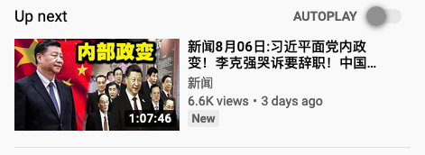
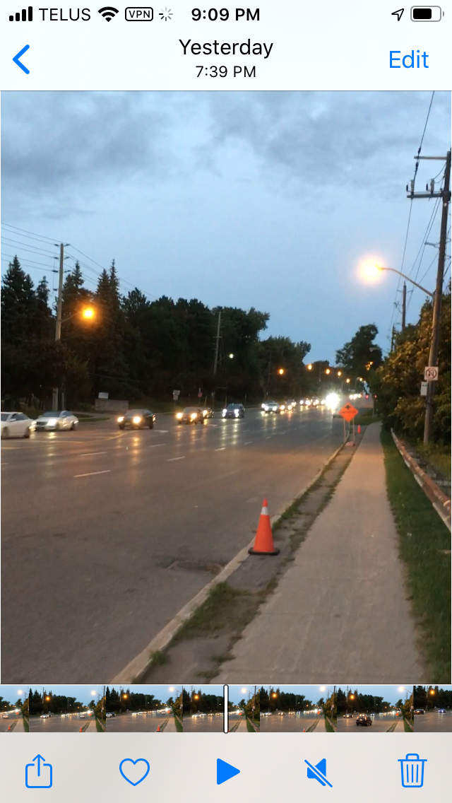
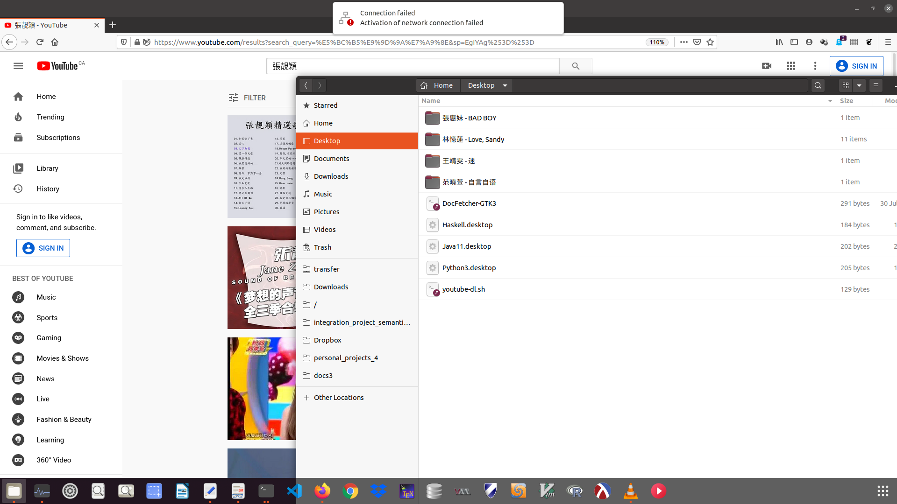

夏目雅子也在南极物语中出演，但能够看出她是被逼迫的，要是不出演可能家人会有生命危险，就如中森明菜在职业巅峰时，她的母亲被逼迫致死，同样的在安氏奈美惠的职业巅峰时，她的母亲被枪杀，夏目雅子在演出后不久也死于白血病。
受到革命党人的诱导，你可能不知不觉中做他们想要你做的事情，就比如无意中放一个曲子或者视频，让你联想到一些事情，以下是 Youtube 上出现在推荐列表的一些例子。


要是你不去做他们诱导的事情，革命党人会来迫使你做，就是你不参与都难，很多网民之所以写文章言语如此激烈，都是被逼迫的，有时你会被逼迫去加害他人，因为你的个人或者家人的安全受到了威胁。
“Meng Wan Zhou 女士最近的官司毫无进展，她肯定对全球的形式也非常失望，这么一闹反倒是害了她，让她进退两难”，比如这些话就是在被逼迫下说出来的，如果不说的话反倒是被挑出了毛病，会被革命党人进一步攻击。
听说成吉思汗在征战西亚的时候，如果马上开城投降的，他会杀死一部分人，如果是抵抗后城破投降的，那他一个不留，这个原理至今还有可能适用。
“在原理上，人类如果想建造，有的人以设施为中心，有的人以内容为中心，就比如虎牙直播软件的资源耗费量小，这就是设施好，但是如果没有人使用软件来创造内容，那就等于白费功夫”，这些话估计也被喜欢玩儿人的黑客预料到了。
黑客看了这些评论后肯定说“过瘾”，哪里晓得过一把瘾可能会带来杀身之祸。
通过《政律英雄》中可以看到，一名检察官要是想作出什么大事，必须背后有个势力给撑腰，要不然早就被其他的势力给干掉了，就比如木村拓哉兄，他要是不娶工藤静香，可能就拍不了这么多电视剧了，因为工藤静香的后台硬。
有一种公司专门利己从不利他人，每一个员工就是一颗棋子，认人摆布，在你工作的时候，会有专门的人控制你的思维，让你身心都有所磨损，这样他们就满足了，我在夏天森林中就看到了一个女职员，虽然很年轻但是动作与表情根个老太太一样。


(Aug 23, 2020) Today was the final day for Conservative party members to cast their ballots in the long leadership contest, which will be decided on Sunday ... The new leader of the Conservative Party will be elected through a ranked ballot system that awards points to each candidate. (CBC Politics)
(Aug 20, 2020) The federal government is extending the Canada emergency response benefit by one more month and revamping the employment insurance program to allow more people to receive financial assistance during COVID-19 ... The three new recovery benefits, which will be taxed at payment, are expected to cost $22 billion. (CBC)
(Aug 15, 2020) Canada to offer residency to asylum seekers on pandemic front lines ... PM Justin Trudeau had promised in May to consider a regularisation programme for people doing ‘heroic work’ in midst of pandemic (Agence France-Presse)
根据你做什么事，你就会受到什么样的攻击，比如说我现在在做记者的工作，我的电脑就受到了攻击，就是关闭了电脑耗电量依旧非常的高，假如在做别的工作，那就会在其他方面受到攻击。
(6 Oct, 2020) Cambodia’s government on Monday officially denied suggestions that its demolition of a US-funded facility at one of its naval bases is a signal that China will be granted basing privileges there ... the Chinese company in 2008 acquired a 99-year lease from Cambodia’s government for the development of the Dara Sakor project covering almost 20 per cent of Cambodia’s coastline by forming a local company to become the leaseholder. The company later reverted to Chinese ownership, the Treasury Department said. (SCMP)
(1 Oct, 2020) Days after promising China would be carbon neutral by 2060 ... the world’s largest emitter of greenhouse gases ... did not make any further pledges in his video speech to the United Nations Summit on Biodiversity. (SCMP)
(22 Sep, 2020) The International Monetary Fund says Angola has reached agreements with two of its large creditors, which have not been identified. China is believed to be the mystery lender behind a reprofiling of Angola’s loans ... which has seen its economic outlook deteriorate amid the fallout from the coronavirus pandemic and an oil price slump. (SCMP)

李翰祥导演的《火烧圆明园》里，慈禧掌权后，效仿古时候的吕后与武则天，将政敌加情敌坎去四肢，装入酒缸里，吕后称之为“人䏑”，但慈禧怕影响到自己的名誉，故且没有把坏事做到底。
金庸在撰写武侠小说之间，遭到同行的妒忌，曾遭到恐吓，要将他斩为十七八块，金庸不以为然，将恐吓的词语加工后写入小说中。
在三国演义的七擒孟获这个板块，董图那与阿会南绑架了孟获献给诸葛丞相，诸葛丞相将孟获放回，孟获归后将董图那与阿会南一干人等全部诛杀。
在三月份的时候，我因出言不逊，得罪了某司的小头目，随后被跟踪了一个月，此人人脉非常的广，可以调动多名公司职员，对我进行攻击。
(October 6, 2020) "Officials in Kyrgyzstan on Tuesday nullified the results of a weekend parliamentary election after mass protests erupted in the capital of Bishkek and other cities, with opposition supporters seizing government buildings overnight and demanding a new vote." (CP24)
郁达夫在自己的作品中多次贬低日本的艺妓，赞美这些女人的雪白的肌肤，由于作品的影响力太大，引起了日本军方的注意，在日本战败之际，郁达夫被巡捕营逮捕并且秘密杀害。
虎牙的某女主播在美国在社交媒体上发表了对自己祖国的不满，她每次回祖国时都被关进小黑屋里审问长达几个小时之久，造成精神失常，需要服用镇静药物。
马克思因参加了反政府组织，被自己的祖国德国通缉，到了法国后仍旧被通缉，他到了言论相对比较自由的英国后，因为缺钱花，写了 The Communist Manifesto 小册子，销量非常的好。
董世侯因失恋，决定报复社会，在1968年将自制的炸药携带入北京西单百货公司，引爆造成数人伤亡，但由于文革期间消息闭塞，恐怖组织的各种事件都没有被媒体报道，或者只是形式上报道一下。
Robert Ricklefs 教授说蜘蛛是一种很奇妙的动物，they create complex networks of webs to trap their prey, so their attack activities are limited to their web sites.
许冠文在《神算》中反对偷税漏税的行为，说这是在作弊，有了偷税漏税这是第一步，下一步犯罪很可能会更恶劣。
黄沾在节目中介绍了香港的咸湿佬，给消费者们介绍各地的妹子，说台妹和香港的价钱都很高，而且服务态度还不好，大陆妹的价钱低但是服务质量也不高，泰国的妹子可以带你周游世界但是价钱很高，越南的价钱低而且服务也很好。
中山美穗这个人精拍的一部电视剧叫《两千年之恋》，她是一个程序员出身的高管，被一名间谍所引诱并且利用，将政府部门的电脑打开放纵间谍盗取信息。
斗鱼这个游戏直播平台里，有这么一个买彩票游戏，抽一次的反馈有可能是一个宇宙飞船，送给一个你喜爱的主播会，而你的等级与各个方面都会增加，但是很可能抽到的是飞船碎片，这样还得继续抽，来拼凑一个完整的飞船才能送礼。
三国演义中，吕布被曹操擒获以后求情说他会给曹操效力，但刘备这时说孟德可记得丁原董卓之故而，曹操会意将吕布于白门楼处斩。
黑客会在你不留神的时候攻击你的神经，造成你对某人或者某物大肆破坏，这样黑客在地下室看笑话，这样的害虫要一块打。

有段单口相声叫《蜂麻燕雀》，讲的是过去的四种生意，“峰”是指群蜂蛰人，“麻”是指单枪匹马，“燕”是指颜值high到爆，"雀"是指填补空缺。
有些艺人由于非常优秀，公司为了挽留有时会不择手段，也有些艺人由于成绩不佳，公司会逼迫艺人导致悲剧，比如中森明菜近些年已经不成人样了。
Randall Knight 教授在讲电学的时候说每天生活中都会有被静电电到的可能，但是有这么一点刺激反而更健康。
Phil Collins 在一首歌中大骂英国政坛，说这是一个让人摸不到头脑的地带，说话都是反的，声东击西，指桑骂槐，无中生有，一点准普都没有。
萨德侯爵在他的著作中描写了这么一个无耻的人，他把两个女儿嫁给一个好友，然后又要求和好友共享另一个朋友的女儿，每次犯错的时候他总是用一个天真的笑容把事情遮过去。
玉置浩二的花边新闻里有这么一段，他为了他的第二任老婆永远记住他，决定把她的毛发都剃光，在屋内不许穿衣服，回来的时候猥琐的说“想我不，主人回来了”。
济公活佛这个没有情商的癫僧，为了好玩，设个陷阱造个假信害人，完全不站在别人的立场考虑问题，整天说假话大话空话，这病病的不轻，必须治疗。
谢晋导演的《芙蓉镇》反映了村里政治部主任在文革时期，由于月经失调，专门迫害她嫉妒的政敌，等风波过去后，被迫害的妇女收到了抚恤金，但是由于丈夫被杀，这点钱哪能弥补的来。
俗话说兔死走狗烹，彭越，徐达等辈就是最好的例子，彭越被做成了彭越牌肉酱，和伯邑考的肉羹有的一比，味道好极了，即美味又经济，老百姓最爱吃了，徐达本来有疾病在身，可是被命令食发物，最后疾病恶化而死。
Dr. Dre 说这世界上有三种人，一种 let things happen to them，一种 wonder what's going to happen，最后一种 get on the streets and make things happen，但是从社会学的角度来说这三种没有一个是更好的，各有所好。
在《顶级播音员》中，记者透露一名知名巫师利用送光盘将电脑病毒植入客户电脑里，捜取个人信息以及通话记录，再将搜来的信息通过占卜方式以及各种装神弄鬼，把客户变成工具人，任由摆布。
柴文门在创作漫画《东京爱情故事》时，一直在想的就是如果作品还没有连载完就死了该怎么办，比如有一天突然死于心脏病或者车祸，或者死于癌症，可见竞争对手给她施加了压力，让她无法顺利完成作品。
郭德纲说的一句名言就是同行是冤家，要是没有同行他早就红了，嬉笑怒骂的非主流相声演员能熬到他这样也算古今第一人了。
袁腾飞曾严厉批评社会的地痞败类，如果一个人说你是王八蛋，那有可能是误解，如果所有人都说你王八蛋，那你肯定就是个王八蛋。
在晚清谴责小说《官场现行记》中，李宝嘉举了无数个官场中背后捅刀的例子，上级看你不爽可以任意革你的职，这时候同僚们假情假意的来帮你上下打点，最后给你降了三级，其实完全可以官复原职的，目的就是让你晚他们一步升官。
在《残菊物语》中，家遭聚变的武士是个富有的印刷商，同僚看着他的财产眼红，故意在伤口撒盐，告发他的秘密让他家破人亡，随后同僚继承了这印刷产业。
黄秋生演的《人肉叉烧包》根于真实事件改编，澳门的一个炸烧店老板惨遭冤家的报复，一家老小全被杀害，尸骨无存，老板被杀后冤家接手了这家店继续卖炸烧包，据说叉烧包的肉都是从被杀的一家的身上剃下来的，几年后在某垃圾场发现了被害者的残骨。
黑客在监视这个电脑时，有意在时间合适的时候捣一下乱，刚才在写到叉烧包的时候，电脑的亮度迅速的变换。
就是没有连网，没有运行什么程序，这个苹果笔记本电脑的底部仍感到烫手，在写到这里的时候邻居家的墙发出了奇怪的声音。

要说这“汉奸”一词的用法已经泛滥，可是有些人物要是被骂是汉奸那他可就不高兴了，甚至会采取报复行动。
自古有些帮派组织对国家政治影响力比较大，比如杜月笙参加的上海青幫，蒋中正就靠着他们推翻的北洋政府。
商人向来都是重利轻义的，要是他们的既得利益受到威胁，那什么混蛋事都做得出来，昔日的朋友都变成敌人。
广东人就是没有存在感，吴研人身为一个广东人在写《二十年目睹之怪现状》的开头必须称赞广东人一番，要不然接下来会有麻烦。
鲁迅在《阿Q正传》中提到当时的有钱人必须要参加“革命”运动，不参加就有被革命党人洗劫一空的可能。
侯耀文在文革结束的时候状态级差，乍一看就是个坏人，可能斗争的太多了又结交了不少狐朋狗友，结果后来他醒悟了，在相声中一再批评他身边这些形形色色的人。
牛群讽刺的一名科长说话时总是带着检讨的语气，然后冯巩就问在十年浩劫中是不是受了什么刺激了，由此可见当时的情况。
姜昆在描写首都风气的时候数落了小年轻的一番，说他们就是瞧不起外地人，找茬就骂人，还嘲讽着要想把首都从北京改到深圳去那中央能不能批准。
马志明在九十年代初看到了太多了的广东商人的诈骗行为，说他们的产品质量都有问题，幸亏他这个北京副厂长一犯犹豫就没签合同。
单田方在九十年代开了一个传媒公司，想通过卖评书录影带赚钱，当时他被灌输了商人狡诈的思想，出个评书偷工减料，还不把整个故事讲全了想留到第二部再讲。
朱自清描写秦淮河的妓女时一来叹息她们的命运怎样的苦，可又提出这些女子怎样的妖艳，怎样的让客人欲罢不能。
在大片《Cleopatra》中，一名来自东方的女奴隶得到贿赂，在女王的饮料里下毒，被一名来自高加索的女奴隶告发，最后女王令东方女喝下这杯毒药。
宫崎骏在他的动画片中反映了他所目睹的公司文化，一个年轻的职员如何被打压被控制，人心在这种环境下变得如何贪婪，唯一的解决方法就是离开这个恶性的环境。
一对小情侣为了好玩，在色情网站上发布做爱视频，得到了好评，但是马上就受到攻击，硬是让这个中国太太穿些恶心的情趣内衣拍视频。
在电视剧《东京爱情故事》里，制作组为了宣扬日本的制造业和销售业的发达，故意在背景中突出了工厂码头和商店设施。
在游戏《Emperor: Rise of the Middle Kingdom》中，中国的历史只讲到了宋金时期，最后的关卡就是抗争蒙古的摧毁性入侵。